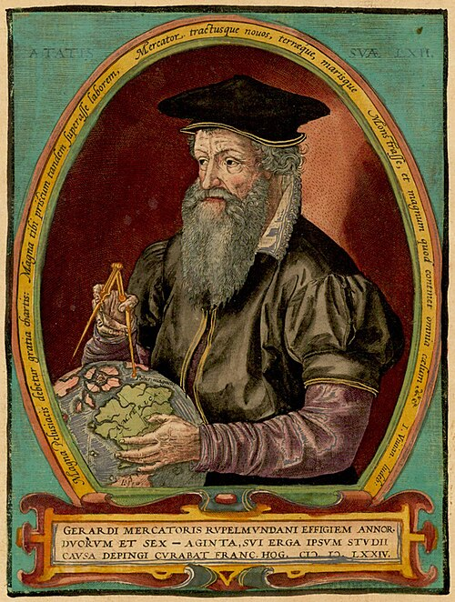
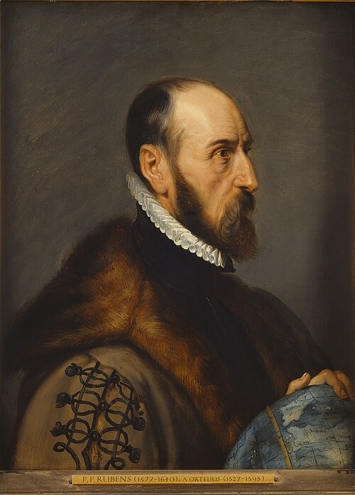
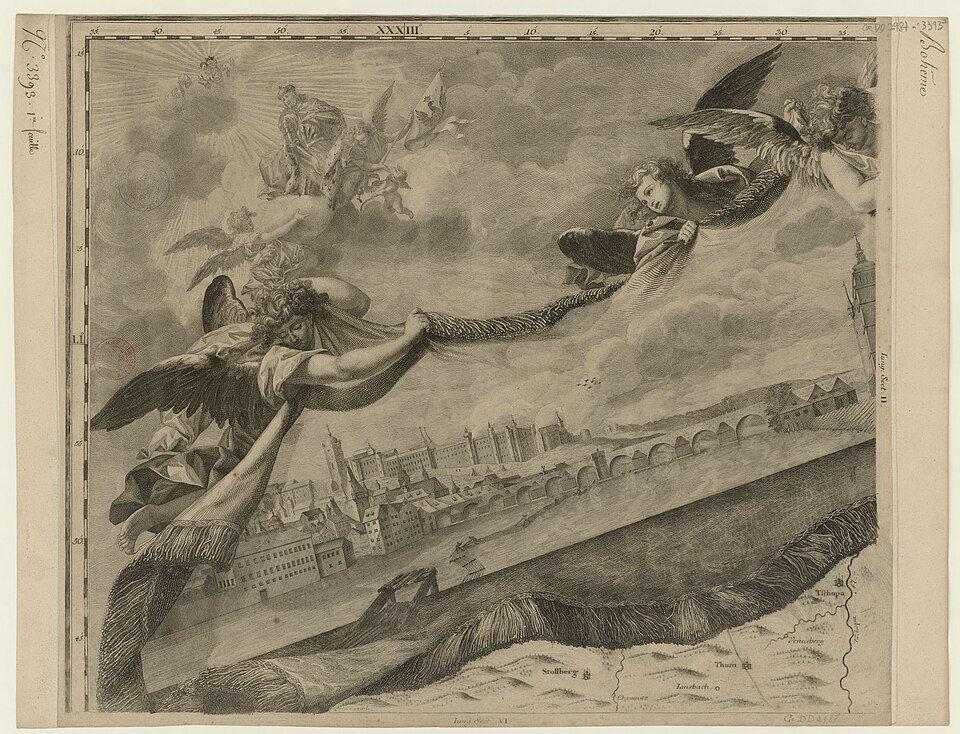

Kartograf = ten, kdo tvoří mapy. Podívej se na tři slavné a jednoho si vyber — v sobotu ho krátce představíš ostatním (kdo to byl, jak dělal mapy, čím je slavný).

Gerardus Mercator
1512–1594, Flandry (dnešní Belgie)
Vlámský kartograf a rytec. Roku 1569 vytvořil slavnou mapu světa v úplně nové projekci a pro knihu map zavedl slovo „atlas".
Metoda — Mercatorova projekce: poledníky i rovnoběžky se kříží v pravém úhlu, takže námořní kurz je na mapě rovná čára — skvělé pro plavbu. Daň: zkresluje plochy u pólů (Grónsko vypadá obrovské, i když je mnohem menší než Afrika).
Jeho projekci používají dodnes i mapy na mobilu.

Abraham Ortelius
1527–1598, Antverpy
Vlámský kartograf a obchodník s mapami. Roku 1570 vydal Theatrum Orbis Terrarum — bývá označován za první moderní atlas (jednotný formát listů, seznam pramenů).
Nápad navíc: jako jeden z prvních nahlas napsal, že kontinenty do sebe kdysi možná zapadaly — dávno předtím, než vznikla teorie pohybu kontinentů.
Otec moderního atlasu.

Jan Kryštof Müller
1673–1721, český zemský kartograf
Vojenský inženýr a kartograf. Roku 1720 dokončil Müllerovu mapu Čech — na svou dobu neuvěřitelně podrobnou mapu celého Českého království (na 25 listech).
Metoda: měření přímo v terénu, triangulace a pečlivý záznam tisíců obcí, cest a řek. (Triangulaci znáš z dílny — Müller ji používal naostro!)
Nejpodrobnější mapa Čech 18. století — dodnes cenný historický pramen.
Obrázky: Wikimedia Commons (volné dílo). Müllerovu osobu se portrét nedochoval — vpravo je zdobný roh (kartuše) jeho mapy s pohledem na město.
Když Velký vůz zrovna nevidíš, na opačné straně Polárky hledej „W" — souhvězdí Kasiopeja. Polárka je zhruba mezi nimi.
Co je měřítko? Poměr mezi vzdáleností na mapě a ve skutečnosti. Zapisuje se třeba 1 : 25 000 a čte se „jedna ku pětadvaceti tisícům".
Dva druhy měřítka:
| Číselné | Grafické (proužkové) |
|---|---|
| Zlomek/poměr, např. 1 : 50 000. Musíš počítat. | Nakreslené pravítko přímo na mapě — přeměříš a odečteš. Funguje i po zvětšení/zmenšení kopie (proto ho mají turistické mapy). |
Nejčastější měřítka:
| Měřítko | 1 cm na mapě = | Kde ho potkáš |
|---|---|---|
| 1 : 10 000 | 100 m | plán města, orientační běh |
| 1 : 25 000 | 250 m | podrobná turistická mapa |
| 1 : 50 000 | 500 m | turistická mapa KČT |
| 1 : 100 000 | 1 km | přehledová / automapa |
Když kreslíš mapu, potřebuje legendu — klíč, co který symbol znamená. Tady jsou nejběžnější (přírodní i člověkem vytvořené prvky):
Tip: symboly si můžeš vymyslet i vlastní — hlavní je, aby byly v legendě vysvětlené a na celé mapě stejné.